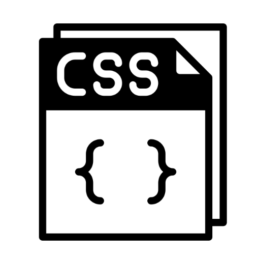
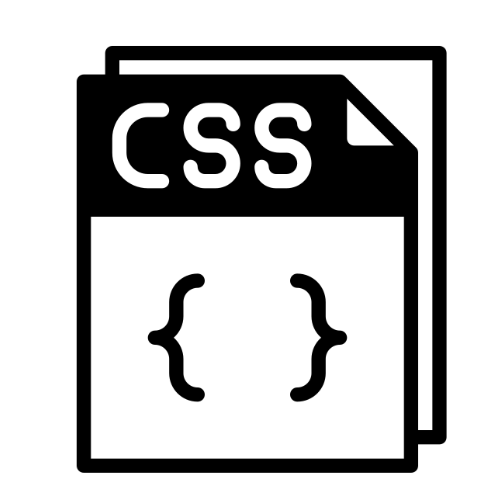

"Quando se nasce com poucos recursos, estudar se torna o maior ato de rebeldia contra o sistema"
Thiago Concer.
Seja bem-vindo(a) ao meu portfólio! Sou estudante em Análise e Desenvolvimento de Sistemas e também curso Design Gráfico no 1º período ambos. Além de estudante sou mãe e esposa, e aqui irei compartilhar um pedacinho da minha jornada.
Recentemente, tomei uma decisão ousada: deixei a faxina para me dedicar intensamente ao aprendizado e à aplicação de habilidades no mundo da tecnologia. Essa transformação não foi fácil, mas a minha determinação, foco e planejamento financeiro me ajudaram a dar esse passo importante. - Foi desafiador, mas também extremamente gratificante.
Foi trilhando caminhos desconhecidos em busca de conhecimento que me deparei com a DIO.ME, uma plataforma que foi fundamental para me guiar e me inspirar nessa jornada que é em muitas das vezes desafiadora. Graças a ela, estou aqui, apresentando meu portfólio, que é a materialização do meu aprendizado até agora. Cada linha de código e cada design que criei refletem não apenas as habilidades que adquiri, mas também a paixão que sinto pelo mundo tecnológico.
Embora eu esteja apenas no início da minha jornada, já sinto que dei grandes saltos. É incrível ver como posso transformar ideias em realidade, quase como mágica! (rsrs) Neste portfólio, você encontrará projetos que não apenas mostram o que aprendi, mas também a minha visão criativa e a dedicação em cada detalhe. Estou animada para explorar novas oportunidades e colaborar com pessoas que compartilham a mesma paixão pela tecnologia. Agradeço à DIO.ME e a todos que me apoiaram até aqui, e em especial meu esposo Philippe Gomes e minha filha Valentina Augusta,"não seria possivel sem a ajuda e a compreesão em cima da ausência!"
Conquistas & Habilidades
Leitura
Código Limpo
Um guia essencial para programadores que desejam escrever código mais limpo e eficiente, com dicas práticas e exemplos.
Este livro me ajudou a entender a importância de manter um código legível e organizado, facilitando a manutenção e colaboração, aprofundamento em boas práticas de programação.
Lógica Socrática
Uma abordagem única para desenvolver o pensamento crítico e a habilidade de argumentação, utilizando a lógica socrática como base, e por mais duvido que pareça, este livro é magnifico para a verdadeira aplicação da lógica não so na área tecnologica.
Este livro foi essencial para eu acreditar no meu potencial de evolução e superar desafios.
Mulheres que Correm com os Lobos
Uma coletânea de histórias e mitos sobre o universo feminino, incentivando o autoconhecimento e a força interior.
Indico porque me inspirou a valorizar minha trajetória e minha autenticidade.
O Poder do Hábito
Uma análise sobre como os hábitos funcionam e como podem ser mudados para melhorar a vida pessoal e profissional.
Este livro me ajudou a entender a importância de criar hábitos saudáveis e produtivos, tanto na vida pessoal quanto na carreira.
Supere o Não
um guia prático para quebrar qualquer objeção, seja na vida pessoal ou profissional, ensinando a arte de negociar com pessoas difíceis.
Este livro me ajudou a desenvolver habilidades de negociação e a lidar com objeções de forma eficaz, tanto na vida pessoal quanto profissional.